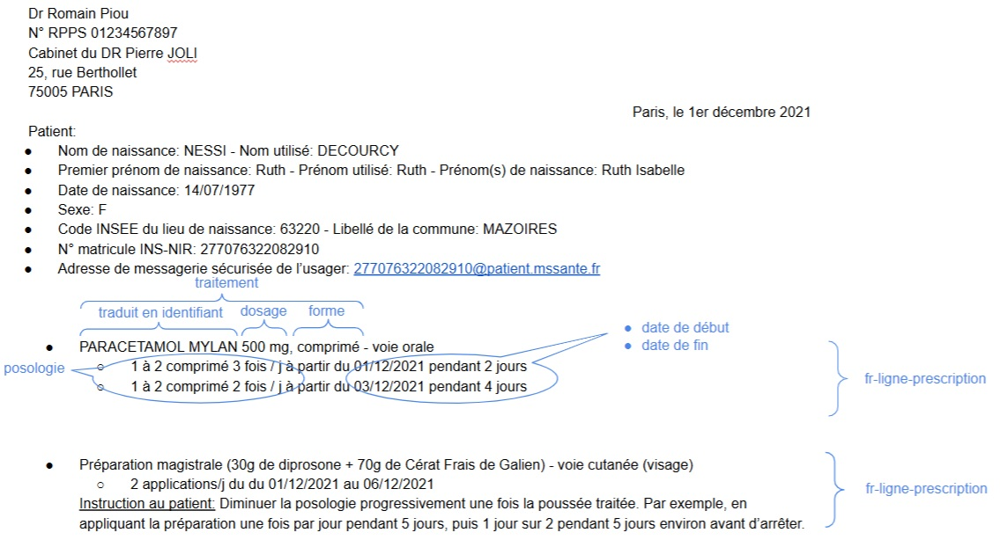

Guide d'implémentation de la ePrescription
0.1.0 - ci-build

Guide d'implémentation de la ePrescription
0.1.0 - ci-build

Guide d'implémentation de la ePrescription - version de développement local (v0.1.0) construite par les outils de publication FHIR (HL7® FHIR® Standard). Voir le répertoire des versions publiées
Une prescription médicamenteuse est un ensemble d’un ou plusieurs traitements prescrits, chacun associé à sa posologie. Ce guide spécifie comment représenter ces prescriptions sous forme numérique interopérable en utilisant le standard FHIR.
Cette spécification couvre l’ensemble des prescriptions médicamenteuses dans l’écosystème français :
Les spécifications sont issues des travaux du groupe de travail Interop’Santé et s’appuient sur :
Exemple de modélisation d’une prescription

Note : cet exemple se concentre sur les données spécifiques à une ligne de prescription (un traitement prescrit associé à sa posologie). La modélisation des autres informations (ex. identité patient, identité prescripteur…) est traitée dans le guide d’intégration FRCore
Exemple 1 de posologie annotée :

Exemple 2 de posologie annotée :

Pour faciliter la compréhension par les professionnels de santé, des modèles métier ont été élaborés pour décrire de manière exhaustive les données qui constituent une ligne de prescription et une posologie.
Ces modèles utilisent le formalisme des “modèles logiques” d’HL7, qui permettent de représenter les concepts métier de façon indépendante des contraintes techniques de FHIR. Contrairement aux profils FHIR techniques destinés aux développeurs, ces modèles logiques offrent une vision métier claire et accessible, facilitant le dialogue entre professionnels de santé, éditeurs de logiciels et experts FHIR.
Avantages pour les professionnels de santé :
Modèles disponibles :